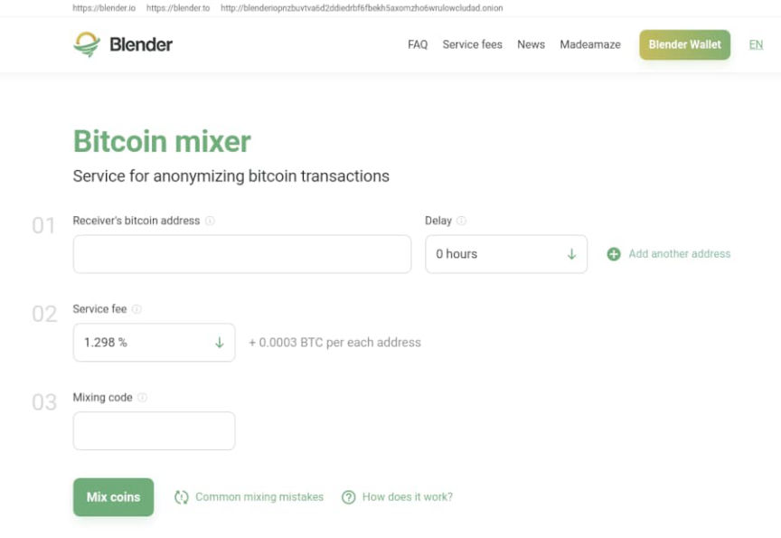
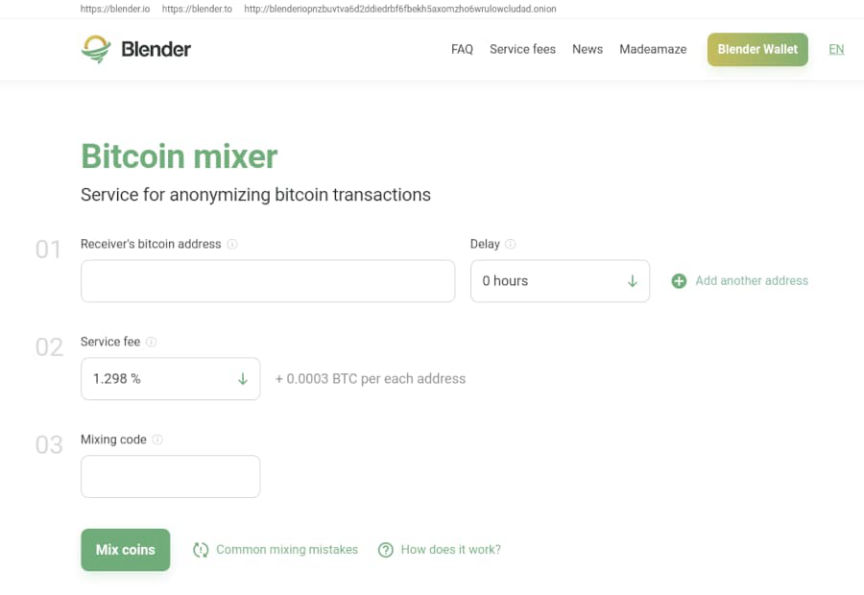

Treasury Department Sanctions a Bitcoin Mixer
~3 min read | Published on 2022-05-07, tagged Mixer, Sanctioned using 570 words.
The United States Treasury Department sanctioned the cryptocurrency mixer blender.io. Blender is the first mixer to be sanctioned by the U.S. government.
The U.S. Department of the Treasury’s Office of Foreign Assets Control (OFAC) sanctioned the Bitcoin mixer Blender.io for allegedly processing $20.5 million in stolen cryptocurrency.
According to the Treasury Department, Lazarus Group, a hacking group purportedly sponsored by the Democratic People’s Republic of Korea (DPRK), moved more than 20 million dollars worth of cryptocurrency through Blender.io. Lazarus Group reportedly stole virtual currency worth 600 million dollars from “a blockchain project linked to the online game Axie Infinity.” The 20 million processed by Blender.io, according to the Treasury Department, was a part of the Axie Infinity heist.

“Today, for the first time ever, Treasury is sanctioning a virtual currency mixer,” said Under Secretary of the Treasury for Terrorism and Financial Intelligence Brian E. Nelson. “Virtual currency mixers that assist illicit transactions pose a threat to U.S. national security interests. We are taking action against illicit financial activity by the DPRK and will not allow state-sponsored thievery and its money-laundering enablers to go unanswered.”
Per cointelegraph.com:
In late March, Ronin, an Ethereum sidechain built for the popular play-to-earn nonfungible token game Axie Infinity, was hacked for over 173,600 Ether (ETH) and 25.5 million USD Coin (USDC) for a combined value of over $600 million.
The updated list of DPRK sanctions includes Blender.to, Blender.io, Blender’s onion address (blenderiopnzbuvtva6d2ddiedrbf6fbekh5axomzho6wrulowcludad.onion), their Telegram bots, and the company’s email addresses, among other things. Additionally, the Treasury Department identified four Ethereum addresses allegedly associated with Lazarus Group. All four have been added to the list of sanctions.
0x098B716B8Aaf21512996dC57EB0615e2383E2f96;*0xa0e1c89Ef1a489c9C7dE96311eD5Ce5D32c20E4B; 0x3Cffd56B47B7b41c56258D9C7731ABaDc360E073;*0x53b6936513e738f44FB50d2b9476730C0Ab3Bfc1; “While most virtual currency activity is licit, it can be used for illicit activity, including sanctions evasion, through mixers, peer-to-peer exchangers, darknet markets, and exchanges. This includes the facilitation of heists, ransomware schemes, and other cybercrimes. Treasury continues to use its authorities against malicious cyber actors in concert with other U.S. departments and agencies, as well as our foreign partners, to disrupt financial nodes tied to illicit payments and cyber-attacks. Those in the virtual currency industry play a critical role in implementing appropriate Anti-Money Laundering/Countering the Financing of Terrorism (AML/CFT) and sanctions controls to prevent sanctioned persons and other illicit actors from exploiting virtual currency to undermine U.S foreign policy and national security interests.”
“The virtual currency mixers that assist criminals are a threat to U.S. national security interests. Treasury will continue to investigate the use of mixers for illicit purposes and consider the range of authorities Treasury has to respond to illicit financing risks in the virtual currency ecosystem. For example, in 2020, Treasury’s Financial Crime Enforcement Network (FinCEN) assessed a $60 million civil money penalty against the owner and operator of a virtual currency mixer for violations of the Bank Secrecy Act (BSA) and its implementing regulations. Criminals have increased use of anonymity-enhancing technologies, including mixers, to help hide the movement or origin of funds. Additional information on illicit financing risks associated with mixers and other anonymity-enhancing technologies in the virtual asset ecosystem can be found in the 2022 National Money Laundering Risk Assessment.”
Blender paused operations in April for maintenance. As of May 7, 2022 at 9:14 PM (GMT +1), all three of Blender’s sanctioned addresses are offline (as is one that was not sanctioned).
U.S. Treasury Issues First-Ever Sanctions on a Virtual Currency Mixer, Targets DPRK Cyber Threats archive.is, archive.org, treasury.gov
The U.S. Department of the Treasury’s Office of Foreign Assets Control (OFAC) sanctioned the Bitcoin mixer Blender.io for allegedly processing $20.5 million in stolen cryptocurrency.
According to the Treasury Department, Lazarus Group, a hacking group purportedly sponsored by the Democratic People’s Republic of Korea (DPRK), moved more than 20 million dollars worth of cryptocurrency through Blender.io. Lazarus Group reportedly stole virtual currency worth 600 million dollars from “a blockchain project linked to the online game Axie Infinity.” The 20 million processed by Blender.io, according to the Treasury Department, was a part of the Axie Infinity heist.

Blender.io is hardly the only cryptocurrecy mixer used for less than legal purposes.
“Today, for the first time ever, Treasury is sanctioning a virtual currency mixer,” said Under Secretary of the Treasury for Terrorism and Financial Intelligence Brian E. Nelson. “Virtual currency mixers that assist illicit transactions pose a threat to U.S. national security interests. We are taking action against illicit financial activity by the DPRK and will not allow state-sponsored thievery and its money-laundering enablers to go unanswered.”
Per cointelegraph.com:
In late March, Ronin, an Ethereum sidechain built for the popular play-to-earn nonfungible token game Axie Infinity, was hacked for over 173,600 Ether (ETH) and 25.5 million USD Coin (USDC) for a combined value of over $600 million.
The updated list of DPRK sanctions includes Blender.to, Blender.io, Blender’s onion address (blenderiopnzbuvtva6d2ddiedrbf6fbekh5axomzho6wrulowcludad.onion), their Telegram bots, and the company’s email addresses, among other things. Additionally, the Treasury Department identified four Ethereum addresses allegedly associated with Lazarus Group. All four have been added to the list of sanctions.
“The virtual currency mixers that assist criminals are a threat to U.S. national security interests. Treasury will continue to investigate the use of mixers for illicit purposes and consider the range of authorities Treasury has to respond to illicit financing risks in the virtual currency ecosystem. For example, in 2020, Treasury’s Financial Crime Enforcement Network (FinCEN) assessed a $60 million civil money penalty against the owner and operator of a virtual currency mixer for violations of the Bank Secrecy Act (BSA) and its implementing regulations. Criminals have increased use of anonymity-enhancing technologies, including mixers, to help hide the movement or origin of funds. Additional information on illicit financing risks associated with mixers and other anonymity-enhancing technologies in the virtual asset ecosystem can be found in the 2022 National Money Laundering Risk Assessment.”
Blender paused operations in April for maintenance. As of May 7, 2022 at 9:14 PM (GMT +1), all three of Blender’s sanctioned addresses are offline (as is one that was not sanctioned).
U.S. Treasury Issues First-Ever Sanctions on a Virtual Currency Mixer, Targets DPRK Cyber Threats archive.is, archive.org, treasury.gov